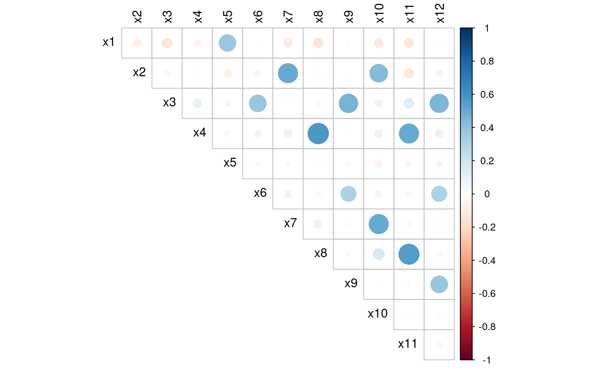
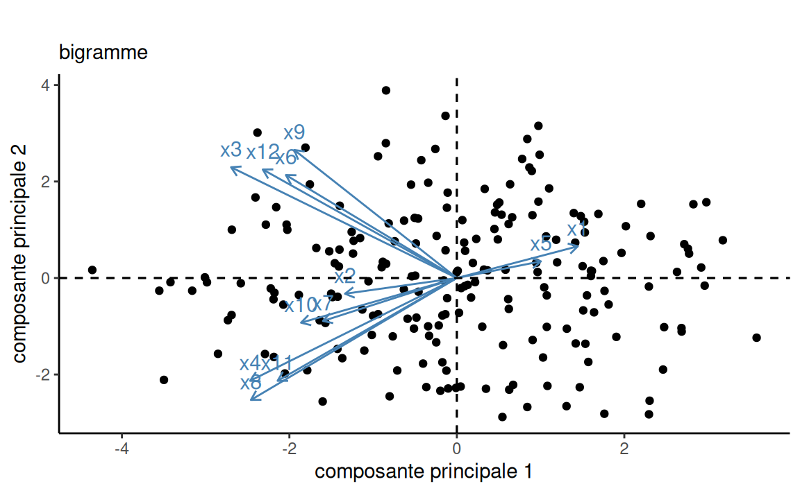
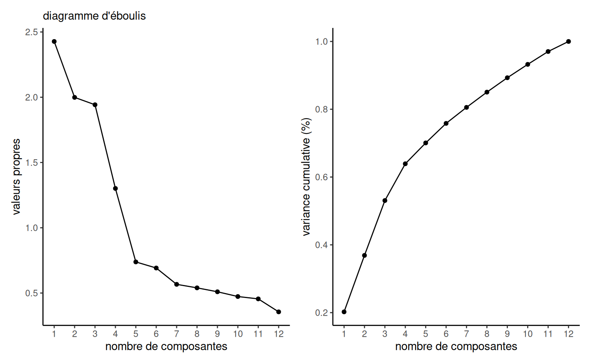

data(factor, package = "hecmulti")
# Matrice de corrélation
cor(factor)
# Statistiques descriptives
summary(factor)3 Réduction de la dimension
MATH 60602 - Analyse multidimensionnelle appliquée, HEC Montréal.
3.1 Introduction
Ce chapitre traite de réduction de la dimensionalité d’un problème d’analyse multidimensionnelle. On dispose de \(p\) variables \(X_1, \ldots, X_p\): comment résumer cet ensemble avec moins de variables (disons \(k\)) tout en conservant le plus de variabilité possible? Nous couvrons deux méthodes dans ce chapitre: la première, intitulée analyse en composantes principales, cherche à réduire le nombre de variables explicatives tout en préservant le plus possible de variabilité exprimée et en créant de nouvelles variables explicatives qui ne sont pas corrélées les unes avec les autres.
La deuxième, appelée analyse factorielle exploratoire, cherche à expliquer la structure de corrélation entre les \(p\) variables à l’aide d’un nombre restreint de facteurs. Elle répond aux questions suivantes:
- Y a-t-il des groupements de variables?
- Est-ce que les variables faisant partie d’un groupement semblent mesurer certains aspects d’un facteur commun (non observé)?
De tels groupements peuvent être détecté si plusieurs variables sont très corrélées entre elles. Une analyse factorielle cherchera à identifier automatiquement ces groupes de variables.
Les facteurs sont des variables latentes qui mesurent des constructions. Par exemple, l’habileté quantitative, habileté sociale, importance accordée à la qualité du service, importance accordée à la loyauté, habileté de leader, etc.
L’analyse factorielle est aussi une méthode de réduction du nombre de variables. En effet, une fois qu’on a identifié les facteurs, on peut remplacer les variables individuelles par un résumé pour chaque facteur (qui est souvent la moyenne des variables qui font partie du facteur).
3.2 Coefficient de corrélation linéaire
On veut examiner la relation entre deux variables \(X_j\) et \(X_k\) et on dispose de \(n\) couples d’observations, où \(x_{i, j}\) (respectivement \(x_{i, k}\)) est la valeur de la variable \(X_j\) (\(X_k\)) pour la \(i\)e observation.
Le coefficient de corrélation linéaire entre \(X_j\) et \(X_k\), que l’on note \(r_{j, k}\), cherche à mesurer la force de la relation linéaire entre deux variables, c’est-à-dire à quantifier à quel point les observations sont alignées autour d’une droite. Le coefficient de corrélation est \[\begin{align*} r_{j, k} &= \frac{\widehat{\mathsf{Co}}(X_j, X_k)}{\{\widehat{\mathsf{Va}}(X_j) \widehat{\mathsf{Va}}(X_k)\}^{1/2}} %\\&=\frac{\sum_{i=1}^n (x_{i, j}-\overline{x}_j)(x_{i, k} -\overline{x}_{k})}{\left\{\sum_{i=1}^n (x_{i, j}-\overline{x}_j)^2 \sum_{i=1}^n(x_{i, k} -\overline{x}_{k})^2\right\}^{1/2}} \end{align*}\]
Les propriétés les plus importantes du coefficient de corrélation linéaire \(r\) sont les suivantes:
- \(-1 \leq r \leq 1\);
- \(r=1\) (respectivement \(r=-1\)) si et seulement si les \(n\) observations sont exactement alignées sur une droite de pente positive (négative). C’est-à-dire, s’il existe deux constantes \(a\) et \(b>0\) (\(b<0\)) telles que \(y_i=a+b x_i\) pour tout \(i=1, \ldots, n\).
Règle générale,
- Le signe de la corrélation détermine l’orientation de la pente (négative ou positive)
- Plus la corrélation est près de 1 en valeur absolue, plus les points auront tendance à être alignés autour d’une droite.
- Lorsque la corrélation est presque nulle, les points n’auront pas tendance à être alignés autour d’une droite. Il est très important de noter que cela n’implique pas qu’il n’y a pas de relation entre les deux variables. Cela implique seulement qu’il n’y a pas de relation linéaire entre les deux variables. La Figure 3.1 montre bien ce point: ces jeux de données ont la même corrélation linéaire (quasi-nulle), mais ne sont pas clairement pas indépendantes puisqu’elles permettent de dessiner un dinosaure ou une étoile.

La matrice de corrélation entre \(X_1, \ldots, X_p\), dont l’entrée \((i, j)\) contient la corrélation entre \(X_i\) et \(X_j\), est une matrice symmétrique dont les éléments de la diagonale sont égaux à 1. À mesure que le nombre de variables augmente, le nombre de corrélations à estimer augmente: puisque la matrice est \(p \times p\), ce nombre augmente comme le carré du nombre de variables explicatives. L’estimation ne sera pas fiable à moins que \(n \gg p\).
3.3 Présentation des données
Le questionnaire suivant porte sur une étude dans un magasin. Pour les besoins d’une enquête, on a demandé à 200 consommateurs adultes de répondre aux questions suivantes par rapport à un certain type de magasin sur une échelle de 1 à 5, où
- pas important
- peu important
- moyennement important
- assez important
- très important
Pour vous, à quel point est-ce important
- que le magasin offre de bons prix tous les jours?
- que le magasin accepte les cartes de crédit majeures (Visa, Mastercard)?
- que le magasin offre des produits de qualité?
- que les vendeurs connaissent bien les produits?
- qu’il y ait des ventes spéciales régulièrement?
- que les marques connues soient disponibles?
- que le magasin ait sa propre carte de crédit?
- que le service soit rapide?
- qu’il y ait une vaste sélection de produits?
- que le magasin accepte le paiement par carte de débit?
- que le personnel soit courtois?
- que le magasin ait en stock les produits annoncés?
Les statistiques descriptives ainsi que la matrice des corrélations sont obtenues en exécutant les lignes suivantes:
| x1 | x2 | x3 | x4 | x5 | x6 | x7 | x8 | x9 | x10 | x11 | x12 | |
|---|---|---|---|---|---|---|---|---|---|---|---|---|
| x1 | -0.08 | -0.14 | -0.07 | 0.38 | -0.01 | -0.10 | -0.13 | -0.03 | -0.11 | -0.12 | -0.01 | |
| x2 | 0.04 | -0.02 | -0.08 | 0.06 | 0.50 | 0.01 | -0.01 | 0.43 | -0.12 | 0.07 | ||
| x3 | 0.10 | -0.06 | 0.39 | 0.00 | 0.05 | 0.47 | 0.08 | 0.13 | 0.46 | |||
| x4 | -0.05 | 0.06 | 0.08 | 0.57 | 0.01 | 0.09 | 0.50 | 0.09 | ||||
| x5 | -0.04 | -0.04 | -0.02 | 0.03 | -0.07 | -0.06 | -0.07 | |||||
| x6 | 0.07 | 0.04 | 0.32 | 0.07 | -0.04 | 0.32 | ||||||
| x7 | 0.09 | -0.02 | 0.51 | -0.03 | 0.02 | |||||||
| x8 | -0.03 | 0.16 | 0.55 | 0.04 | ||||||||
| x9 | 0.01 | 0.02 | 0.39 | |||||||||
| x10 | 0.01 | 0.02 | ||||||||||
| x11 | 0.05 | |||||||||||
| x12 |

factor.| moyenne | écart-type | min | max | histogramme |
|---|---|---|---|---|
| 2.26 | 1.13 | 1 | 5 | ▇▇▆▃▁ |
| 2.51 | 1.24 | 1 | 5 | ▇▇▇▅▂ |
| 3.00 | 1.19 | 1 | 5 | ▃▆▇▇▃ |
| 2.91 | 1.33 | 1 | 5 | ▆▇▇▆▅ |
| 3.55 | 1.17 | 1 | 5 | ▂▃▇▇▇ |
| 2.14 | 1.14 | 1 | 5 | ▇▅▅▂▁ |
| 1.82 | 1.06 | 1 | 5 | ▇▃▂▁▁ |
| 2.92 | 1.32 | 1 | 5 | ▆▇▇▇▅ |
| 3.04 | 1.12 | 1 | 5 | ▃▃▇▇▂ |
| 2.59 | 1.32 | 1 | 5 | ▇▆▆▅▂ |
| 2.98 | 1.33 | 1 | 5 | ▆▅▇▆▅ |
| 3.45 | 1.16 | 1 | 5 | ▂▃▇▇▆ |
On voit dans la Figure 3.2 que quelques groupes de variables sont corrélés entre eux. On peut également regrouper certaines questions sous des thèmes manuellement: le but de l’analyse factorielle sera d’automatiser ce regroupement.
3.4 Analyse en composantes principales
Le but de l’analyse en composantes principales est de réduire le nombre de variables explicatives. En partant de \(p\) variables \(X_1, \ldots, X_p\), on forme de nouvelles variables qui sont des combinaisons linéaires des variables originales, \[\begin{align*} C_j &= \underset{\text{somme de poids fois variables explicatives}}{w_{j1} X_1 + w_{j2} X_2 + \cdots + w_{jp} X_p}, \qquad (j=1, \ldots, p), \\ 1 &= \underset{\text{poids standardisés}}{w_{j1}^2 + \cdots + w_{jp}^2} \end{align*}\] de telle sorte que
- La première variable formée, \(C_1\), appelée première composante principale, possède la variance maximale parmi toutes les combinaisons linéaires sous la contrainte \(w_{1i}^2 + \cdots + w_{1p}^2=1\).1
- Pour \(j=2, \ldots, p\), la \(j\)e composante principale \(C_j\) possède la variance maximale parmi toutes les combinaisons linéaires qui sont non corrélées avec \(C_1, \ldots, C_{j-1}\) sous la contrainte \(w_{j1}^2 + \cdots + w_{jp}^2=1\).
Ainsi, les composantes principales forment un ensemble de variables non corrélées entre elles, qui récupèrent en ordre décroissant le plus possible de la variance des variables originales. La somme des variances des \(p\) composantes principales est égale à la somme des variances des \(p\) variables originales.
Mathématiquement, les composantes principales correspondent aux vecteurs propres de la matrice de covariance, mais on peut également utiliser la matrice de corrélation2. L’avantage de la matrice de corrélation (ou de la standardisation des variables) est que l’unité de mesure n’impacte pas le résultat; autrement, un poids plus important est attribué aux variables qui ont la plus forte hétérogénéité.
Si on conserve toutes les composantes principales, cela revient à changer le système de coordonnées dans lequel sont exprimées nos observations en effectuant une rotation: avec deux variables, on on trouve la direction dans le système 2D dans lequel l’étendue est la plus grande. Si une simple rotation peut sembler inutile, la méthode est fort utile en haute dimension. On espère en général qu’un petit nombre de composantes principales réussira à expliquer la plus grande partie de la variance totale.
La Figure 3.3 démontre cette décomposition sur des données bidimensionnelles simulées. La variance des données dans le premier panneau est 13.51 pour l’axe des abscisse et 6.43 pour l’axe des ordonnées avec une corrélation de 0.86, à comparer avec des variances de 18.65 et 1.21 et une corrélation nulle entre les deux composantes principales.
Dans une analyse en composantes principales, on conservera un nombre \(k<p\) de variables explicatives pour résumer les données. Ce outil est utilisé à des fins exploratoires, puisqu’on n’implique pas de variable réponse dans le modèle. L’analyse en composantes principales est utilisé pour réduire la dimension afin de faire de la classification, de l’analyse de regroupements et aussi réduire les coûts associés à ces méthodes en projetant les données dans un sous-espace de dimension plus faible.
En R, on effectue l’analyse en composantes principales avec la fonction princomp3.
La sortie contient
- l’écart-type de chaque composante,
acp$sdev - les poids \(w_{ij}\), appelés chargements (loadings), qui donnent la correspondance entre le système de coordonnées des composantes principales et celui des variables \(\boldsymbol{X}\) originales.
- les nouvelles coordonnées dans l’espace des composantes principales,
acp$scores
On peut représenter les données à l’aide d’un bigramme: c’est une nuage de points de chaque observations dans l’espace des deux premières composantes principales. Si on couple cela avec les directions offertes par les chargements pour chacune des variables explicatives \(X_1, \ldots, X_p\), il en ressort que certaines variables augmentent/diminuent de pair. Ainsi, on voit dans la Figure 3.4 que les variables x3, x6, x9 et x12 tendent dans la même direction, comme x4, x8 et x11. On reviendra sur ce point dans une section subséquente.
Une fois qu’on a choisit le nombre de composantes, on pourrait ne conserver que les \(k\) premières colonnes de la matrice des composantes principales acp$scores pour faire les graphiques ou pour approximer la matrice de covariance. Il faut garder en tête qu’il faudra néanmoins collecter les mêmes questions pour recréer les composantes principales avec de nouvelles observations, ce qui est peu commode si ce qu’on veut est réduire le coût de la collecte.
# Analyse en composantes principales
# de la matrice de corrélation
acp <- princomp(factor, cor = TRUE)
loadings(acp) # chargements
biplot(acp) # bigramme
On peut étudier la sortie pour vérifier les propriétés de notre décomposition. Le Tableau 3.3 montre la variance de chaque composante principale. Si on additionne l’ensemble des variances (sans arrondir), on obtient une variance cumulative des 12 composantes principales, 12, soit le même que le nombre de variables explicatives puisque les variables standardisées ont variance unitaire. Si on calcule la matrice de corrélation, cor(acp$scores), on remarquera que la corrélation est nulle entre les variables.
| C1 | C2 | C3 | C4 | C5 | C6 | C7 | C8 | C9 | C10 | C11 | C12 |
|---|---|---|---|---|---|---|---|---|---|---|---|
| 2.43 | 2.00 | 1.94 | 1.30 | 0.74 | 0.69 | 0.57 | 0.54 | 0.51 | 0.47 | 0.46 | 0.36 |
3.4.1 Choix du nombre de composantes principales
Si on désire réduire la dimension, il nous faudra choisir \(k \leq p\) variables. Cette section traite du choix du nombre de variables explicatives à retenir. Idéalement, ce nombre devrait être beaucoup plus petit que le nombre original de variables.
Une première approche est de regarder le pourcentage de la variance totale expliquée. Puisque les composantes principales sont ordonnées en ordre décroissant de variance, on peut étudier la variance cumulative des \(k\) premières composantes et choisir un nombre qui explique le plus possible. Si l’ajout d’une variable augmente peu la variabilité totale expliquée par l’ensemble, alors cette variable est probablement superflue. On pourrait choisir un nombre de composantes pour expliquer un pourcentage prédéfini de la vairance totale, disons 70%. Deux autres critères couramment employés sont:
- critère du coude de Cattell: ce critère consiste à sélectionner un nombre de composantes dans le diagramme d’éboulis (
screeplot), un graphique des variances des composantes principales4. Habituellement, il y a une décroissance rapide de la variance suivie d’un plateau: on prendra le nombre de composantes qui correspond au \(k\) juste avant l’apparition du plateau (le début du coude, où il a stabilisation apparente). C’est un critère très subjectif, puisqu’il y a souvent plusieurs plateaux et que la variance peut décroître très lentement. On peut utiliser la fonctionscreeplotpour obtenir le diagramme d’éboulis mais il est facile de le créer manuellement et le résultat est esthétiquement plus réussi. - critère de Kaiser: un critère basé sur les valeurs propres de la matrice de corrélation. Le nombre de facteurs choisis est le nombre de composantes principales dont la variance est supérieures à 1. L’idée est de garder seulement les facteurs qui expliquent plus de variance qu’une variable individuelle.
Si on utilise le critère de Kaiser avec les données factor, on conservera 4 composantes principales qui expliqueront 63.9 pourcent de la variance totale des variables originales - voir le Tableau 3.3. Le diagramme d’éboulis de la Figure 3.5, qui peut être produit avec la fonction hecmulti::eboulis(eigen(cor(factor)) suggère quant à lui cinq composantes.
Code
hecmulti::eboulis(eigen(cor(factor)))
3.4.2 Formulation mathématique
Ce complément d’information est optionnel.
Mathématiquement, le problème de l’analyse en composantes principales revient à calculer la décomposition en valeurs propres et vecteurs propres de la matrice de covariance \(\mathsf{Co}(\boldsymbol{X})=\boldsymbol{\Sigma}\). On peut écrire \[\begin{align*} \boldsymbol{\Sigma} = \boldsymbol{Q}\boldsymbol{\Lambda}\boldsymbol{Q}^\top \end{align*}\] où \(\boldsymbol{\Lambda} = \mathrm{diag}\{\lambda_1, \ldots, \lambda_p\}\) est une matrice diagonale contenant les valeurs propres en ordre décroissant (\(\lambda_1 \geq \cdots \geq \lambda_p > 0\)) et \(\boldsymbol{Q}\) est une matrice carrée \(p \times p\) orthogonale contenant les vecteurs propres. La meilleure approximation de rang \(k \leq p\) de \(\boldsymbol{\Sigma}\) est obtenue en spécifiant \[\begin{align*} \widetilde{\boldsymbol{\Sigma}}_k = \sum_{j=1}^k \lambda_j \boldsymbol{q}_j\boldsymbol{q}_j^\top, \end{align*}\] une combinaison des vecteurs propres \(\boldsymbol{q}_1, \ldots, \boldsymbol{q}_k \in \mathbb{R}^p\) non corrélés.
En résumé
- La corrélation mesure la force de la dépendance linéaire entre deux variables: plus elle est élevée, plus les points s’alignent.
- Si le nombre de variables explicatives \(p\) est conséquent par rapport au nombre d’observations \(n\), on a peu d’information disponible pour estimer de manière fiable les corrélations.
- Une analyse en composante principales fait une décomposition en valeurs propres/vecteurs propres de la matrice de covariance ou de corrélation.
- Ces nouvelles variables sont orthogonales (corrélation nulle) entre elles.
- Les composantes principales sont ordonnées en ordre décroissant de variance: si on ne conserve que \(k<p\) de variables, on maximise la variance expliquée.
- Le choix du nombre de variables est basé sur des règles du pouce: le critère des valeurs propres de Kaiser suggère de prendre autant de composantes principales que de variances supérieures à 1.
- Un bigramme permet de représenter graphiquement les directions des variables en fonction des deux premières composantes principales.
3.5 Analyse factorielle exploratoire
Si le bigramme a permis de faire ressortir quelques orientations communes, on aimerait aller plus loin dans notre exploration. On considère encore une fois la matrice de covariance associée avec \(p\) variables explicatives \(X_1, \ldots, X_p\): le modèle d’analyse factorielle cherche à décrire cette dernière en fonction d’un plus petit nombre de paramètres.
Conceptuellement, le modèle d’analyse factorielle suppose qu’on peut regrouper les variables explicatives numériques (parfois avec quelques variables binaires) à l’aide de concepts communs appelés facteurs. Certaines variables explicatives devraient donc idéalement être fortements corrélées entre elles. Le choix des variables est dicté par le bon sens: on inclut dans le modèle des variables qui peuvent logiquement être associée, par exemple des items de questionnaires excluant les données sociodémographiques.
Le modèle d’analyse factorielle fait l’hypothèse que les variables dépendent linéairement d’un plus petit nombre \(m\) de variables aléatoires, \(F_1, \ldots, F_m\), appelées facteurs communs. Cette relation n’est pas parfaite, aussi on inclut \(p\) termes d’aléas \(\varepsilon_1, \ldots, \varepsilon_p\), de moyenne zéro et de variance \(\mathsf{Va}(\varepsilon_i)=\psi_i\) (\(i=1, \ldots, p\)). À des fins d’identifiabilité, on suppose que les aléas ne sont pas corrélées aux facteurs \(F\) et entre elles et que les facteurs \(F_1, \ldots, F_m\) ont une moyenne nulle et une variance unitaire, donc \(\mathsf{E}(F_i)=0\) et \(\mathsf{Va}(F_i)=1\) (\(i=1, \ldots, p\)).
Le modèle d’analyse factorielle s’écrit \[\begin{align*} \boldsymbol{X} &= \underset{\text{moyenne}}{\boldsymbol{\mu}} + \underset{\text{combinaison linéaire de facteurs latents}}{\boldsymbol{\Gamma}\boldsymbol{F}} + \underset{\text{aléa}}{\boldsymbol{\varepsilon}}, \end{align*}\] ou si on écrit le système ligne par ligne, \[\begin{align*} X_1 &= \mu_1 + \gamma_{11}F_1 + \gamma_{12} F_2 + \cdots + \gamma_{1m}F_m + \varepsilon_1\\ X_2 &= \mu_2 + \gamma_{21}F_1 + \gamma_{22} F_2 + \cdots + \gamma_{2m}F_m + \varepsilon_2\\ &\vdots \\ X_p &= \mu_p + \gamma_{p1}F_1 + \gamma_{p2} F_2 + \cdots + \gamma_{pm}F_m + \varepsilon_p, \end{align*}\] où \(\mu_i\) est l’espérance (moyenne théorique) de la variable aléatoire \(X_i\), \(\boldsymbol{\Gamma}\) est une matrice \(p \times m\) avec éléments \(\gamma_{ij}\), qui représentent le chargement (poids) de la variable \(X_i\) sur le facteur \(F_j\) (\(i=1, \ldots, p\); \(j=1, \ldots, m\)).
Les espérances (\(\mu_i\)), les chargements (\(\gamma_{ij}\)) et les variances (\(\psi_i\)) sont des quantités fixes, mais inconnues, tandis que les facteurs communs (\(F_i\)) et les aléas (\(\varepsilon_i\)) sont des variables aléatoires non observables.
Selon ce modèle, on obtient \[\begin{align*} \mathsf{Va}(\boldsymbol{X}) &= \boldsymbol{\Gamma}\mathsf{Va}(\boldsymbol{F})\boldsymbol{\Gamma}^\top + \mathsf{Va}(\boldsymbol{\varepsilon})\\ & = \boldsymbol{\Gamma}\boldsymbol{\Gamma}^\top + \mathrm{diag}(\boldsymbol{\psi}). \end{align*}\] Les éléments diagonaux de cette matrice sont \(\mathsf{Va}(X_j) = \sum_{l=1}^k \gamma_{jl}^2 + \psi_j\): on appelle communalité le terme \(h_j = \sum_{l=1}^k \gamma_{jl}^2\), qui représente la proportion de variance totale de \(X_j\) due à la corrélation entre les facteurs. Le terme \(\psi_j\) est dénommé unicité.
Si les variables ont été préalablement standardisées de telle sorte que \(\mathsf{E}(X_i)=0\) et \(\mathsf{Va}(X_i)=1\) (ce qui revient à utiliser la matrice de corrélation des observations dans l’analyse), alors \(\mathsf{Cor}(X_i, F_j)=\gamma_{ij}\), c’est-à-dire, le chargement de la variable \(X_i\) sur le facteur \(F_j\) est le coefficient de corrélation entre les deux.
Sans aucune contrainte sur le modèle, la matrice de covariance de \(X_1, \ldots, X_p\) possède \(p(p+1)/2\) paramètres, soit \(p\) variances et \(p(p-1)/2\) termes de corrélation. Avec le modèle d’analyse factorielle, on suppose que l’on peut décrire cette structure en utilisant seulement \(p(m+1) - m(m-1)/2\) paramètres5. Par exemple, avec \(p=50\) variables explicatives et \(m=6\) facteurs, on essaie de décrire la structure de covariance à l’aide de 350 paramètres au lieu de 1275.
Pour faire une analyse factorielle, la taille d’échantillon devrait être quand même conséquente: le nombre d’entrées dans la base de données est \(np\) et ce nombre représente la quantité d’unités (information) disponible pour estimer les covariances. Plusieurs références suggèrent d’avoir une taille d’échantillon entre cinq et 20 fois le fois le nombre de variables, ou bien un nombre minimal de 100 à 1000 observations. Des études de simulations suggèrent que la taille critique dépend des paramètres, communalités, distribution des données, etc. Ces règles du pouce sont donc essentiellement arbitraires.
Il existe plusieurs méthodes pour extraire les facteurs, c’est-à-dire pour estimer les paramètres du modèle (les \(\psi_i\) et les \(\gamma_{ij}\)). Nous allons discuter de deux d’entre elles: la méthode du maximum de vraisemblance et la méthode des composantes principales. L’avantage de l’estimation par maximum de vraisemblance est qu’elle permet l’utilisation de critères d’information et de statistiques de tests pour guider le choix du nombre de facteurs, en supposant toutefois la normalité des facteurs et des aléas.
3.5.1 Rotation des facteurs
Dans le modèle d’analyse factorielle, on peut montrer que, lorsqu’il y a deux facteurs ou plus, il existe plusieurs configurations de facteurs qui donnent la même structure de covariance. En fait, les chargements peuvent seulement être déterminés à une transformation orthogonale près6. Si les chargements provenant d’une méthode d’extraction des facteurs ne sont pas uniques, la matrice de corrélation estimée par le modèle est par contre unique.
Il existe plusieurs techniques de rotation de facteurs. Le but de ces techniques est d’essayer de trouver une solution qui fera en sorte que les facteurs seront facilement interprétables. La méthode la plus utilisée est la méthode varimax: elle produit une configuration de chargement en maximisant la variance de la somme des carrés des chargements pour les \(m\) facteurs.
La méthode varimax tend à produire une configuration de facteurs tel que les chargements de chaque variable sont dispersés (des chargements élevés positifs ou négatifs et d’autres presque nuls). Il est conseillé de toujours tenter d’interpréter la solution avec une rotation varimax. Si ce n’est pas suffisamment clair, il existe d’autres méthodes de rotation dont certaines (les rotations de type oblique) permettent la présence de corrélation entre les facteurs.
3.5.1.1 Estimation par la méthode des composantes principales
La façon la plus simple d’estimer les chargements est d’utiliser la méthode des composantes principales en prenant comme estimation \[\begin{align*} \widehat{\boldsymbol{\Gamma}} = \boldsymbol{Q}_{1:m} \mathrm{diag}(\lambda_1^{1/2}, \ldots, \lambda_m^{1/2}),\end{align*}\] où \(\lambda_j\) est la \(j\)e plus grande valeur propre de \(\boldsymbol{S}\), la matrice de covariance empirique, et \(\boldsymbol{Q}_{1:m}\) est la sous-matrice formée par les \(m\) premières colonnes de \(\boldsymbol{Q}\). le vecteur propre associé. On peut estimer les variances des aléas à travers \[\begin{align*} \widehat{\boldsymbol{\psi}} = \mathrm{diag}\left(\mathbf{S} - \widehat{\boldsymbol{\Gamma}}\widehat{\boldsymbol{\Gamma}}^\top\right). \end{align*}\] L’avantage de cette approche est que l’on peut utiliser la même décomposition en valeurs propres et vecteurs propres pour chaque valeur de \(m\): seule la rotation dépend de la dimension choisie. La solution est également toujours valide avec la garantie que \(\widehat{\psi}_j>0\). On peut utiliser la discussion de la Section 3.4.1 pour choisir le nombre de variables.
# Solution (chargements) avec rotation varimax
facto_cp <- hecmulti::factocp(factor, nfact = "kaiser", cor = TRUE)3.5.1.2 Estimation par maximum de vraisemblance
Si on suppose que les aléas et les facteurs suivent des lois Gaussiennes, alors on peut obtenir une forme explicite pour la fonction de vraisemblance de la matrice de covariance. L’estimation des paramètres requiert une optimisation numérique qui est souvent difficile et qui mène parfois à des solutions paradoxales. On obtient un cas de quasi-Heywood quand \(h_j=1\) pour une variable \(j\), (on parle de cas de Heywood si \(h_j > 1\)). Si on modélise des variables explicatives centrées réduites, \(\mathsf{Va}(X_j)=1\), d’où un problème d’interprétation car le terme \(\psi_j\) serait nul (cas de quasi-Heywood) ou négatif (cas de Heywood) alors même que ce terme représente la variance du \(j\)e aléa. Les cas de quasi-Heywood ont plusieurs causes, lesquelles sont listées dans la documentation SAS. Souvent, c’est dû à l’utilisation d’un trop petit ou trop grand nombre de facteurs ou une taille d’échantillon trop petite, etc. Cela complique l’interprétation et nous amène à questionner la validité du modèle d’analyse factorielle comme simplification de la structure de covariance.
Les chargements estimés pour la solution à quatre facteurs, suite à la rotation varimax, sont obtenus avec le code suivant:
# Ajuster le modèle factoriel par maximum de vraisemblance
fa4 <- factanal(x = factor,
factors = 4L)
# Imprimer les chargements en omettant les valeurs inférieures à 0.3
print(fa4$loadings,
cutoff = 0.3)| F1 | F2 | F3 | F4 | |
|---|---|---|---|---|
| x1 | 99 | |||
| x2 | 67 | |||
| x3 | 75 | |||
| x4 | 71 | |||
| x5 | 37 | |||
| x6 | 51 | |||
| x7 | 75 | |||
| x8 | 79 | |||
| x9 | 63 | |||
| x10 | 66 | |||
| x11 | 71 | |||
| x12 | 61 |
On constate à la lecture du Tableau 3.4 des chargements que le chargement associé à la première variable est de 0.992 pour le facteur 4: cela correspondrait à un facteur avec une corrélation de presque un, donc \(F_4 \approx X_1\). Le modèle obtenu avec la méthode du maximum de vraisemblance n’est donc pas adéquat puisque l’optimisation a convergée vers un cas de quasi-Heywood. Pour diagnostiquer le tout, on peut aussi analyser les valeurs d’unicité: la minimum de min(fa4$uniqueness) est 0.005, ce qui correspond à la tolérance de l’algorithme (valeur minimale permise dans l’optimisation), voir ?factanal. On retourne à la planche à dessin en réduisant le nombre de variables.
En général, on associe une variable à un groupe (facteur) si son chargement est supérieur à 0.3 (en valeur absolue), ce qui donne
- Facteur 1: \(X_4\), \(X_8\) et \(X_{11}\)
- Facteur 2: \(X_3\), \(X_6\), \(X_9\) et \(X_{12}\)
- Facteur 3: \(X_2\), \(X_7\) et \(X_{10}\)
- Facteur 4: \(X_1\) et \(X_5\).
Ces facteurs sont interprétables:
- Le facteur 1 représente l’importance accordée au service.
- Le facteur 2 représente l’importance accordée aux produits.
- Le facteur 3 représente l’importance accordée à la facilité de paiement.
- Le facteur 4 représente l’importance accordée aux prix.
Dans cet exemple, les choses se sont bien passées et le nombre de facteurs que nous avons spécifié semble être adéquat (hormis le cas de quasi-Heywood), mais ce n’est pas toujours aussi évident. Il est utile d’avoir des outils pour guider le choix du nombre de facteurs.
3.5.2 Choix du nombre de facteurs
Il existe différentes méthodes pour se guider dans le nombre de facteurs, \(m\), à utiliser. Cependant, le point important à retenir est que, peu importe le nombre choisi, il faut que les facteurs soient interprétables. Par conséquent, les méthodes qui suivent ne devraient servir que de guide et non pas être suivies aveuglément. La méthode du maximum de vraisemblance que nous avons utilisée dans l’exemple possède l’avantage de fournir trois critères pour choisir le nombre de facteurs appropriés. Ces critères sont:
- le critère d’information d’Akaike (AIC)
- le critère d’information bayésien de Schwarz (BIC)
- le test du rapport de vraisemblance pour l’hypothèse nulle que le modèle de corrélation décrit le modèle factoriel avec \(m\) facteurs est adéquat, contre l’alternative qu’il n’est pas adéquat.
Les critères d’information servent à la sélection de modèles; ils seront traités plus en détail dans les chapitres qui suivent. Pour l’instant, il est suffisant de savoir que le modèle avec la valeur du critère AIC (ou BIC) la plus petite est considéré le « meilleur » (selon ce critère).
Le paquet hecmulti contient des méthodes pour extraire la log-vraisemblance, les critères d’information pour un modèle d’analyse factorielle (objet de classe factanal). On peut extraire la valeur-\(p\) pour le test du rapport de vraisemblance comparant le modèle à 12 variables (corrélation empirique) avec le modèle simplifié obtenu en utilisant quatre facteurs: une valeur-\(p\) supérieur à un seuil prédéfini (typiquement \(\alpha=0.05\)) indique que la simplification est adéquate puisqu’on ne rejette pas l’hypothèse nulle. La sortie suivante dans le Tableau 3.5 présente les diagnostics du modèle en fonction du nombre de facteurs pour les modèles ajustés selon la méthode du maximum de vraisemblance.
library(hecmulti)
ajustement_factanal(
covmat = cov(factor),
factors = 1:5,
n.obs = nrow(factor))| k | AIC | BIC | valeur-p | npar | heywood | |
|---|---|---|---|---|---|---|
| 1 | 1 | 2267.14 | 2346.30 | < 2e-16 | 24 | 0 |
| 2 | 2 | 2137.87 | 2253.31 | < 2e-16 | 35 | 0 |
| 3 | 3 | 2017.19 | 2165.61 | 0.09604 | 45 | 0 |
| 4 | 4 | 2002.56 | 2180.67 | 0.97262 | 54 | 1 |
| 5 | 5 | 2012.70 | 2217.19 | 0.97445 | 62 | 1 |
Le nombre de facteurs à utiliser selon le AIC est 4, versus 3 selon le BIC. Le nombre mimimal de critères selon le test du rapport de vraisemblance est NA. Ainsi, on retient la solution à trois facteurs dans tous les cas: cette adéquation entre les critères est l’exception plutôt que la règle.
Il faut garder en tête que l’estimation par maximum de vraisemblance du modèle d’analyse factorielle est très sensible à l’initialisation: on peut aussi parfois obtenir des valeurs différentes selon les logiciels. Cette fragilité, couplée à la haute fréquence de cas de Heywood, fait en sorte que je préfère utiliser la méthode des composantes principales pour l’estimation.
On peut considérer le modèle avec trois facteurs: les chargements (après rotation varimax) sont données dans le Tableau 3.6
| F1 | F2 | F3 | |
|---|---|---|---|
| x1 | |||
| x2 | 67 | ||
| x3 | 76 | ||
| x4 | 71 | ||
| x5 | |||
| x6 | 50 | ||
| x7 | 75 | ||
| x8 | 79 | ||
| x9 | 63 | ||
| x10 | 67 | ||
| x11 | 72 | ||
| x12 | 60 |
Cette solution récupère les trois facteurs service, produits et paiement de la solution précédente à quatre facteurs. Le facteur prix (qui était formé de \(X_1\) et \(X_5\)) n’est plus présent.
On suggère d’utiliser les trois critères découlant de l’utilisation de la vraisemblance et de déterminer le nombre de facteurs à extraire selon différents critères avant d’examiner les modèles avec ce nombre de facteurs et ceux avec un facteur de moins ou de plus. Au final, le plus important est de pouvoir interpréter raisonnablement les facteurs: la configuration de facteurs choisie est logique et compréhensible.
3.5.3 Construction d’échelles à partir des facteurs
Si le seul but de l’analyse factorielle est de comprendre la structure de corrélation entre les variables, alors se limiter à l’interprétation des facteurs est suffisant.
Si par contre, le but est de réduire le nombre de variables pour pouvoir par la suite procéder à d’autres analyses statistiques, l’analyse factorielle peut alors servir de guide pour construire de nouvelles variables (échelles). En supposant que l’analyse factorielle a produit des facteurs qui sont interprétables et satisfaisants, la méthode de construction d’échelles la plus couramment utilisée consiste à construire \(m\) nouvelles variables, une par facteur. Pour un facteur donné, la nouvelle variable est simplement la moyenne des variables ayant des chargements élevés sur ce facteur (positifs ou négatifs, mais de même signe). Une autre méthode, les scores factoriels, sera présentée plus loin.
Lorsqu’on construit une échelle, il est important d’examiner sa cohérence interne. Ceci peut être fait à l’aide du coefficient alpha de Cronbach. Ce coefficient mesure à quel point chaque variable faisant partie d’une échelle est corrélée avec le total de toutes les variables pour cette échelle. Plus le coefficient est élevé, plus les variables ont tendance à être corrélées entre elles. L’alpha de Cronbach est \[\begin{align*} \alpha=\frac{k}{k-1} \frac{S^2-\sum_{i=1}^k S_i^2}{S^2}, \end{align*}\] où \(k\) est le nombre de variables dans l’échelle, \(S^2\) est la variance empirique de la somme des variables et \(S_i^2\) est la variance empirique de la \(i\)e variable. En pratique, on voudra que ce coefficient soit au moins égal à 0.6 pour être satisfait de la cohérence interne de l’échelle.7
Le paquet hecmulti contient une fonction, alpha, pour faire l’estimation du \(\alpha\) de Cronbach
# Création des échelles
ech_service <- rowMeans(factor[,c("x4","x8","x11")])
ech_produit <- rowMeans(factor[,c("x3","x6","x9","x12")])
ech_paiement <- rowMeans(factor[,c("x2","x7","x10")])
ech_prix <- rowMeans(factor[,c("x1","x5")])
# Cohérence interne (alpha de Cronbach)
alphaC(factor[,c("x4","x8","x11")])
alphaC(factor[,c("x3","x6","x9","x12")])
alphaC(factor[,c("x2","x7","x10")])
alphaC(factor[,c("x1","x5")])| service | produit | paiement | prix |
|---|---|---|---|
| 0.781 | 0.718 | 0.727 | 0.546 |
Ainsi, les \(\alpha\) de Cronbach sont tous satisfaisants (plus grand que 0.6) sauf pour le facteur prix (0.546). Tout est donc cohérent. Les échelles provenant des facteurs service, produits et paiement, sont satisfaisantes. Ces facteurs sont identifiés à la fois dans la solution à quatre, mais aussi dans la solution à trois facteurs. Le facteur prix est celui qui apparaît en plus dans la solution à quatre facteurs. Il a une interprétation claire (c’est essentiellement x1), mais son faible \(\alpha\) ferait en sorte qu’il serait discutable de travailler avec l’échelle prix dans d’autres analyses (du moins avec selon l’usage habituel du \(\alpha\)) plutôt que d’utiliser directement la variable x1.
3.6 Compléments d’information
3.6.1 Variables ordinales
Théoriquement, une analyse factorielle ne devrait être faite qu’avec des variables continues. Par contre, en pratique, on l’utilise souvent aussi avec des variables ordinales (comme pour l’exemple portant sur le questionnaire) et même avec des variables binaires (0-1).
Dans ce genre de situation, on peut aussi utiliser d’autres mesures d’associations au lieu du coefficient de corrélation linéaire de Pearson. Par exemple, on peut utiliser la corrélation polychorique, qui est une mesure de corrélation entre deux variables ordinales. La corrélation tétrachorique correspond au cas spécial de deux variables binaires.
Ma suggestion est d’utiliser la corrélation linéaire ordinaire avec des variables ordinales (même binaires). Si les résultats ne sont pas satisfaisants, on peut alors essayer avec d’autres mesures d’associations.
3.6.2 Autres méthodes de rotation des facteurs
Jusqu’à présent, nous avons utilisé la méthode de rotation orthogonale varimax. Il existe de nombreuses autres méthodes de rotations orthogonales fournies dans le paquet psych. Rappelez-vous que le modèle d’analyse factorielle de base suppose que les facteurs sont non corrélés. Les rotations de type obliques permettent d’introduire de la corrélation entre les facteurs: quelquefois, une telle rotation facilitera davantage l’interprétation des facteurs qu’une rotation orthogonale. Notez qu’il faut être prudent lorsqu’on utilise une méthode de rotation oblique car il y aura trois matrices de chargements après rotation (coefficients de régression normalisés, corrélations semi-partielles ou corrélations). On suggère l’utilisation de la première, soit la représentation avec coefficients de régression normalisés. Il s’agit des coefficients de régression si on voulait prédire les variables à l’aide des facteurs. Ils indiquent donc à quel point chaque facteur est associé à chaque variable. Dans le cas d’une rotation orthogonale, ces trois matrices sont les mêmes et il s’agit de trois interprétations valides des chargements.
3.6.3 Scores factoriels
Avec les données de l’exemple, en nous basant sur les résultats de l’analyse factorielle, nous avons créé quatre nouvelles échelles (une par facteur) que l’on peut calculer pour chaque individu:
service= \((X_4+X_8+X_{11})/3\),produit= \((X_3+X_6+X_9+X_{12})/4\),paiement= \((X_2+X_7+X_{10})/3\),prix= \((X_1+X_5)/2\).
Par exemple, la variable prix peut donc être vu comme une combinaison linéaire des 12 variables où seulement \(X_1\) et \(X_5\) reçoivent un poids (égal) différent de zéro. Une autre façon de créer de nouvelles variables consiste à calculer des scores factoriels (un pour chaque facteur) pour chaque individu à partir de la matrice de données centrées et réduite \(\mathbf{Z}\) (de telle sorte que la moyenne de chaque colonne soit 0 et la variance 1). Les score factoriel \[\begin{align*} \widehat{F}_{i, k} &= \left[\mathbf{Z}\mathbf{R}^{-1}\widehat{\boldsymbol{\Gamma}}\right]_{ik}\\&= \widehat{\beta}_{1, k} z_{i, 1} + \cdots + \widehat{\beta}_{12, k}z_{i, 12} \end{align*}\] où \(\widehat{\boldsymbol{\Gamma}}\) est la matrice \(p \times m\) des chargements, \(\mathbf{R}\) la matrice \(p \times p\) des corrélation empirique et où \(z_{i, 1}, \ldots, z_{i, 12}\) est la \(i\)e ligne (observation) de \(\mathbf{Z}\). La matrice \(p \times m\) de coefficients \(\boldsymbol{\beta} = \mathbf{R}^{-1}\widehat{\boldsymbol{\Gamma}}\).
Ainsi, chacune des 12 variables originales contribue au calcul du score factoriel. Les variables ayant des chargements plus élevés sur ce facteur auront tendance à avoir des poids (\(\widehat{\gamma}\)) plus élevés. Par contre, les scores factoriels ne sont pas uniques car ils dépendent des chargements utilisés (et donc à la fois de la méthode d’estimation et de la méthode de rotation). On peut également utiliser les scores factoriels au lieu des 12 variables originales dans des analyses subséquentes. Il est suggéré d’utiliser les nouvelles variables (échelles) obtenues en faisant les moyennes des variables identifiées comme faisant partie de chaque facteur pour les raisons suivantes:
- l’interprétation des scores factoriels est moins claire (chaque facteur dépend de toutes les variables)
- les scores factoriels ne sont pas uniques (ils dépendent de la méthode d’estimation et de rotation).
- les coefficients servant au calcul seront différents d’une étude à l’autre.
| facteur 1 | facteur 2 | facteur 3 | facteur 4 | |
|---|---|---|---|---|
| x1 | 0.03 | 0.05 | 0.04 | 1.01 |
| x2 | -0.05 | 0.01 | 0.31 | 0.01 |
| x3 | 0.01 | 0.45 | -0.02 | 0.01 |
| x4 | 0.30 | 0.01 | 0.01 | 0.03 |
| x5 | 0.00 | -0.01 | -0.01 | 0.00 |
| x6 | -0.01 | 0.17 | 0.02 | 0.00 |
| x7 | -0.01 | -0.02 | 0.44 | 0.02 |
| x8 | 0.45 | -0.05 | 0.04 | 0.04 |
| x9 | -0.03 | 0.27 | -0.02 | 0.00 |
| x10 | 0.02 | 0.01 | 0.30 | 0.02 |
| x11 | 0.30 | 0.00 | -0.07 | 0.02 |
| x12 | 0.00 | 0.24 | 0.00 | 0.01 |
Les scores factoriels sont obtenus en spécifiant scores = "regression" dans les options de la fonction factanal. Les poids avec le modèle à quatre facteurs sont rapportés dans le Tableau 3.8. On remarque que
- pour le premier facteur, trois variables ont des poids importants (\(X_4\), \(X_8\) et \(X_{11}\)). Il s’agit donc d’un facteur très proche du facteur service.
- pour le deuxième facteur, les variables \(X_3\), \(X_6\), \(X_9\) et \(X_{12}\) ont des poids importants. Il s’agit donc d’un facteur très proche du facteur produits.
- pour le troisième facteur, les variables \(X_2\), \(X_7\), \(X_{10}\) ont des poids importants. Il s’agit donc d’un facteur très proche du facteur paiement.
- pour le quatrième facteur, seule la variable \(X_1\) a un poids important. On aurait pu s’attendre à ce que ce soit également le cas pour \(X_5\), en lien avec le facteur prix — ce facteur était moins clair selon le alpha de Cronbach.
Les corrélations entre les échelles (construites avec les moyennes) et les scores factoriels sont données dans le Tableau 3.9. On remarque la forte corrélation entre le score factoriel et les échelles construites avec les moyennes pour les facteurs service, produits et paiement. Cela veut dire qu’utiliser les échelles ou les scores factoriels ne devrait pas faire de différence dans des analyses subséquentes. Par contre, cette corrélation est plus faible (0.82) pour le facteur prix.
| score 1 | score 2 | score 3 | score 4 | |
|---|---|---|---|---|
| échelle 1 | 0.99 | 0.05 | 0.03 | -0.05 |
| échelle 2 | 0.05 | 0.98 | 0.03 | -0.04 |
| échelle 3 | 0.03 | 0.05 | 0.99 | -0.07 |
| échelle 4 | -0.07 | -0.04 | -0.08 | 0.82 |
Étapes de l’analyse factorielle exploratoire
- Déterminer les variables à utiliser dans l’analyse
- Vérifier les prérequis
- Sélectionner une méthode d’estimation et extraire les facteurs
- Déterminer le nombre de facteurs
- Effectuer une rotation des facteurs
- Interpréter les facteurs
- Évaluer la validité du modèle
En résumé
- L’analyse factorielle exploratoire fournit un modèle pour la matrice de corrélation
- La solution du problème n’est pas unique: on choisit celle qui permet de mieux séparer les variables.
- Seules les variables numériques pour lesquelles on suspecte une dimension commune sont incluses dans l’analyse.
- On doit avoir beaucoup d’observations (au moins 100, 10 fois plus que de variables) pour estimer le modèle.
- On estime le modèle à l’aide de la méthode des composantes principales (modèle toujours valide et moins coûteux en calcul, mais critères pour la sélection du nombre de facteurs arbitraires) ou du maximum de vraisemblance (optimisation numérique avec solutions fréquemment problématique, critères d’information pour choix du nombre de facteurs).
- Le nombre de facteurs retenu doit donner des regroupements logiques (facteur wow).
- On utilise toujours une rotation orthogonale pour faciliter l’interprétation (varimax par défaut).
- L’interprétation se fait à partir des chargements (corrélation entre variables et facteurs).
- On crée des échelles en prenant la moyenne des variables qui ont un chargement élevés en lien avec un facteur donné (de même signe).
- Les échelles sont cohérentes si le \(\alpha\) de Cronbach est supérieur à 0.6, faute de quoi elles sont rejetées.
Les contraintes sur les poids sont nécessaires afin de standardiser le problème car il serait possible d’avoir des variances infinies sinon.↩︎
La fonction
princomppeut directement utiliser la base de données numériques, ou la matrice de covariance. Dans le premier cas, on peut spécifier que l’on veut la décomposition de la matrice de corrélation à l’aide de l’argument,cor↩︎On pourrait aussi utiliser
eigen(cor(factor))pour extraire directement la décomposition en valeurs propres/vecteurs propres, mais on n’aurait pas accès aux méthodes pour la visualisation.↩︎Soit les valeurs propres de la matrice de covariance ou corrélation↩︎
Soit \(p\) variances spécifiques et \(pm\) chargements, moins les contraintes de diagonalisation dues à l’invariance du modèle à des rotations orthogonales.↩︎
Une transformation orthogonale est une transformation qui préserve le produit scalaire; elle préserve ainsi toutes les distances et les angles entre deux vecteurs.↩︎
Bien que ce nombre soit arbitraire.↩︎